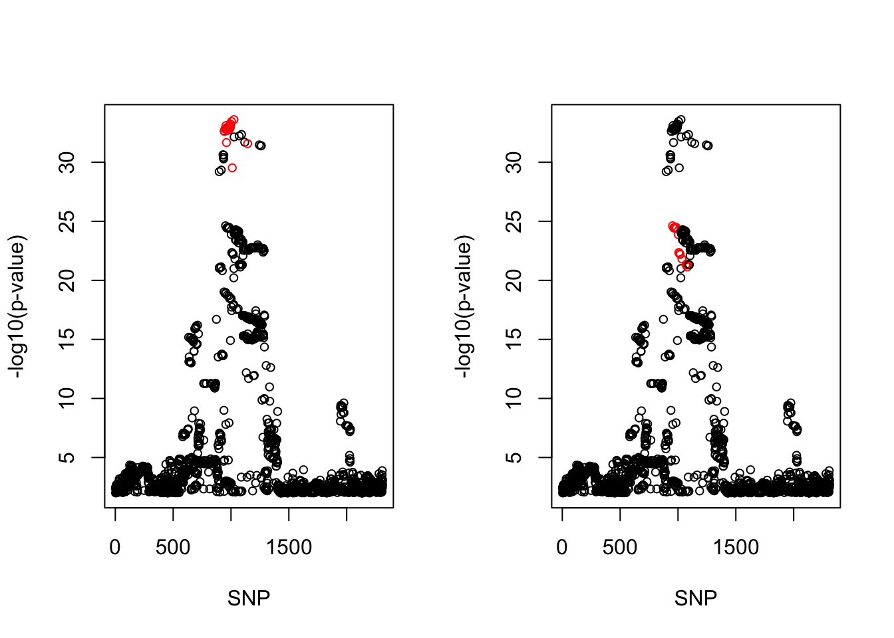
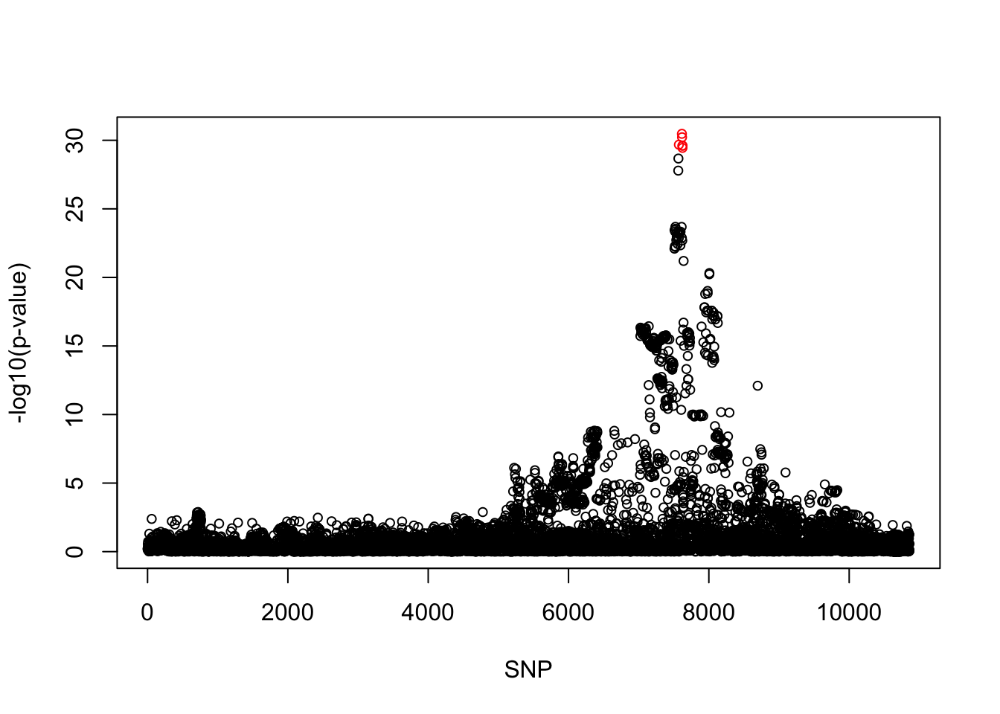
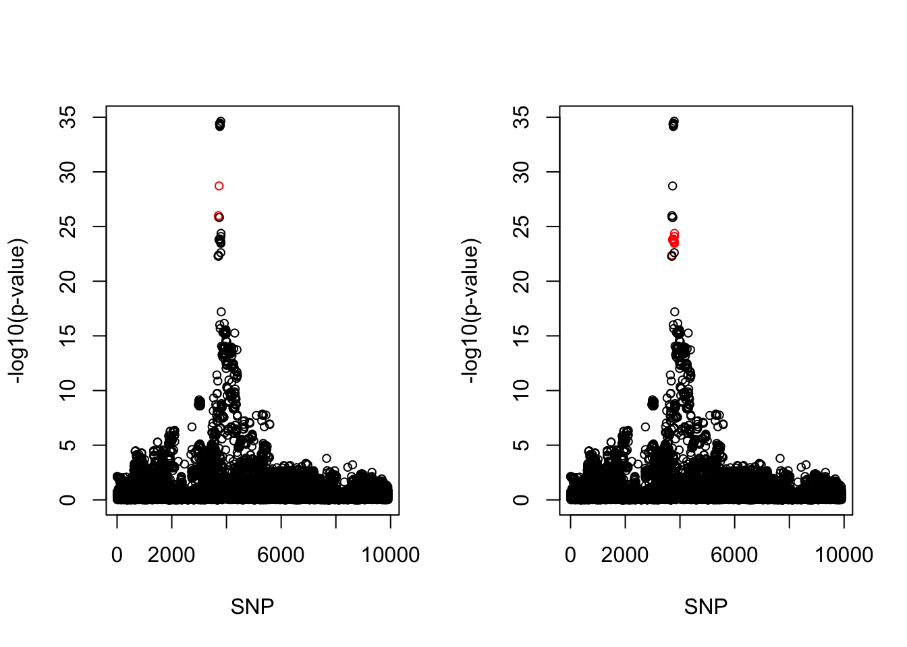

Ukb asthma result
Yunqi Yang
3/28/2024
Last updated: 2024-03-28
Checks: 7 0
Knit directory: coxPHSuSIE-data-application/
This reproducible R Markdown analysis was created with workflowr (version 1.6.2). The Checks tab describes the reproducibility checks that were applied when the results were created. The Past versions tab lists the development history.
Great! Since the R Markdown file has been committed to the Git repository, you know the exact version of the code that produced these results.
Great job! The global environment was empty. Objects defined in the global environment can affect the analysis in your R Markdown file in unknown ways. For reproduciblity it’s best to always run the code in an empty environment.
The command set.seed(20240324) was run prior to running the code in the R Markdown file. Setting a seed ensures that any results that rely on randomness, e.g. subsampling or permutations, are reproducible.
Great job! Recording the operating system, R version, and package versions is critical for reproducibility.
Nice! There were no cached chunks for this analysis, so you can be confident that you successfully produced the results during this run.
Great job! Using relative paths to the files within your workflowr project makes it easier to run your code on other machines.
Great! You are using Git for version control. Tracking code development and connecting the code version to the results is critical for reproducibility.
The results in this page were generated with repository version 9bdf1a9. See the Past versions tab to see a history of the changes made to the R Markdown and HTML files.
Note that you need to be careful to ensure that all relevant files for the analysis have been committed to Git prior to generating the results (you can use wflow_publish or wflow_git_commit). workflowr only checks the R Markdown file, but you know if there are other scripts or data files that it depends on. Below is the status of the Git repository when the results were generated:
Ignored files:
Ignored: .DS_Store
Ignored: .Rproj.user/
Note that any generated files, e.g. HTML, png, CSS, etc., are not included in this status report because it is ok for generated content to have uncommitted changes.
These are the previous versions of the repository in which changes were made to the R Markdown (analysis/ukb_asthma.Rmd) and HTML (docs/ukb_asthma.html) files. If you’ve configured a remote Git repository (see ?wflow_git_remote), click on the hyperlinks in the table below to view the files as they were in that past version.
| File | Version | Author | Date | Message |
|---|---|---|---|---|
| Rmd | 9bdf1a9 | yunqiyang0215 | 2024-03-28 | wflow_publish("analysis/ukb_asthma.Rmd") |
Description: CoxPH-SuSIE result for Asthma using all the cases from UKB. Number of controls is twice as number of cases. In total, 80694 individuals used in fitting.
library(survival)
library(susieR)
devtools::load_all("/Users/nicholeyang/Downloads/logisticsusie")ℹ Loading logisticsusie1. Chr2
res = readRDS("/Users/nicholeyang/Downloads/survivalsusie/result/asthma/fit.susie.chr2.rds")
snp_list = read.csv("/Users/nicholeyang/Downloads/survivalsusie/data/ukb_trait_gwas/asthma/chr2.csv")
fit = res[[1]]
X = res[[2]]pip <- logisticsusie:::get_pip(fit$alpha)
effect_estimate <- colSums(fit$alpha * fit$mu)
pip.sorted = sort(pip, decreasing = TRUE)
pip.sorted[1:10] [1] 0.12659903 0.12600012 0.11068600 0.10921198 0.10349548 0.09637557
[7] 0.09631027 0.09343229 0.07515108 0.07385403class(fit) = "susie"
cs <- susie_get_cs(fit, X)
cs$cs
$cs$L2
[1] 905 915 917 925 933 935 936 953 958 960 967 970 984 1018 1021
[16] 1024 1029 1033
$cs$L1
[1] 896 901 903 909 913 914 916 918 920 921 922 926 927 928 940
[16] 942 943 944 945 951 956 962 977 1092
$purity
min.abs.corr mean.abs.corr median.abs.corr
L2 0.9228637 0.9601091 0.9408674
L1 0.7119415 0.9710065 0.9962000
$cs_index
[1] 2 1
$coverage
[1] 0.9561844 0.9536636
$requested_coverage
[1] 0.95par(mfrow = c(1,2))
snps1 = colnames(X)[cs$cs$L1]
snp_names1 = unlist(lapply(snps1, function(x) unlist(strsplit(x, "_"))[1]))
colors <- ifelse(snp_list$Variant %in% snp_names1, "red", "black")
plot(-log10(snp_list$p.value), col = colors, xlab = "SNP", ylab = "-log10(p-value)", cex = 0.8)
snps2 = colnames(X)[cs$cs$L2]
snp_names2 = unlist(lapply(snps2, function(x) unlist(strsplit(x, "_"))[1]))
colors <- ifelse(snp_list$Variant %in% snp_names2, "red", "black")
plot(-log10(snp_list$p.value), col = colors, xlab = "SNP", ylab = "-log10(p-value)", cex = 0.8)
cbind(snp_list[snp_list$Variant %in% snp_names1, ], pip[sort(cs$cs$L1)]) Variant Position Eff..Allele Trait Beta p.value MAF
944 rs13418548 102917239 T J45 Asthma -0.0085712 2.4895e-33 0.138653
949 rs72823619 102924615 T J45 Asthma -0.0086009 1.4558e-33 0.138507
951 rs72823621 102925435 T J45 Asthma -0.0085984 1.5065e-33 0.138502
957 rs72823628 102928617 A J45 Asthma -0.0086491 7.7125e-34 0.138377
961 rs72823632 102931534 C J45 Asthma 0.0084203 2.1413e-32 0.139900
962 rs72823635 102931612 C J45 Asthma -0.0085851 1.7578e-33 0.138519
964 rs950881 102932512 T J45 Asthma -0.0085852 1.7611e-33 0.138514
966 rs10179458 102934974 T J45 Asthma -0.0085838 1.8251e-33 0.138552
968 rs72823641 102936159 A J45 Asthma -0.0086391 1.0791e-33 0.137774
969 rs10189154 102937544 T J45 Asthma -0.0085841 1.8664e-33 0.138491
970 rs10189526 102937883 T J45 Asthma -0.0085844 1.8600e-33 0.138491
974 rs11679893 102941037 A J45 Asthma -0.0085816 1.9459e-33 0.138500
975 rs10865050 102941311 A J45 Asthma -0.0085911 1.6466e-33 0.138537
976 rs59185885 102944246 G J45 Asthma -0.0087416 1.2002e-33 0.135904
989 rs3771180 102953617 G J45 Asthma 0.0085956 1.5666e-33 0.138600
991 rs72823646 102954213 G J45 Asthma 0.0086601 5.6507e-34 0.138400
992 rs13431828 102954653 T J45 Asthma -0.0086277 8.5339e-34 0.138456
993 rs13408569 102955056 C J45 Asthma -0.0086301 1.0795e-33 0.138159
994 rs13408661 102955082 A J45 Asthma -0.0086167 1.1104e-33 0.138358
1000 rs10173081 102957348 T J45 Asthma -0.0086458 6.3205e-34 0.138459
1005 rs3771175 102960210 A J45 Asthma -0.0086853 3.5139e-34 0.138236
1011 rs2160203 102960824 A J45 Asthma 0.0066426 2.9540e-30 0.234500
1026 rs10197862 102966549 G J45 Asthma -0.0086934 2.4216e-34 0.138809
1144 rs11679146 103009412 G J45 Asthma -0.0084320 2.6465e-32 0.139385
HWE imp..score ORbeta. pip[sort(cs$cs$L1)]
944 0.5800 0.996718 0.865 0.03214973
949 0.5799 0.998479 0.865 0.03990144
951 0.5848 0.99868 0.865 0.04018594
957 0.6401 0.997216 0.864 0.05072795
961 0.9886 genotyped 1.150 0.02365038
962 0.5653 0.999916 0.865 0.04272669
964 0.5653 0.99987 0.865 0.04056136
966 0.5800 0.999501 0.865 0.03394787
968 0.6183 0.996751 0.864 0.07515108
969 0.5947 0.999439 0.865 0.03940760
970 0.5947 0.999431 0.865 0.03944474
974 0.5898 0.999388 0.865 0.03699369
975 0.5898 0.999257 0.865 0.04495545
976 0.7004 0.98584 0.863 0.07385403
989 0.7628 genotyped 1.160 0.02107095
991 0.5503 genotyped 1.160 0.04513746
992 0.4590 0.999936 0.865 0.03307782
993 0.5314 0.998158 0.865 0.03698333
994 0.5314 0.999656 0.865 0.03441533
1000 0.4678 0.999763 0.864 0.03312288
1005 0.3681 0.999819 0.864 0.03444698
1011 0.8786 genotyped 1.120 0.11068600
1026 0.3971 0.999432 0.864 0.02173472
1144 0.8183 0.991341 0.867 0.01587537cbind(snp_list[snp_list$Variant %in% snp_names2, ], pip[sort(cs$cs$L2)]) Variant Position Eff..Allele Trait Beta p.value MAF
953 rs12470864 102926362 A J45 Asthma 0.0052645 2.3980e-25 0.388022
963 rs13020553 102931826 G J45 Asthma 0.0052433 3.6678e-25 0.387940
965 rs950880 102932562 A J45 Asthma 0.0052442 3.4806e-25 0.388078
973 rs13001325 102939036 T J45 Asthma 0.0052432 3.6061e-25 0.387831
982 rs1420104 102948470 A J45 Asthma 0.0052456 3.4234e-25 0.387845
984 rs12479210 102949161 T J45 Asthma 0.0052375 3.9868e-25 0.388113
985 rs13019081 102950822 C J45 Asthma 0.0052479 3.2522e-25 0.387923
1002 rs1420101 102957716 C J45 Asthma -0.0051964 1.3089e-24 0.383200
1007 rs13001714 102960485 G J45 Asthma 0.0049912 4.4775e-23 0.395378
1009 rs12712142 102960584 A J45 Asthma 0.0049905 4.5372e-23 0.395372
1016 rs6543119 102963072 T J45 Asthma 0.0049767 5.8362e-23 0.395147
1019 rs13017455 102964742 T J45 Asthma 0.0049720 6.4183e-23 0.395141
1034 rs11123923 102967844 A J45 Asthma 0.0049255 1.5515e-22 0.395308
1070 rs12999364 102974129 T J45 Asthma 0.0048687 4.8605e-22 0.395197
1073 rs12998521 102974417 T J45 Asthma 0.0048764 4.1821e-22 0.395124
1076 rs12987977 102975336 G J45 Asthma 0.0048660 4.9905e-22 0.395259
1081 rs6710885 102977537 G J45 Asthma 0.0048457 7.4237e-22 0.395409
1085 rs2287037 102979028 T J45 Asthma 0.0048742 4.3554e-22 0.395228
HWE imp..score ORbeta. pip[sort(cs$cs$L2)]
953 0.059240 0.99821 1.090 0.09637557
963 0.071160 0.998523 1.090 0.09343229
965 0.071730 0.999009 1.090 0.09631027
973 0.102100 0.998854 1.090 0.12600012
982 0.102800 0.9989 1.090 0.12659903
984 0.094820 0.998988 1.090 0.10921198
985 0.096220 0.998889 1.090 0.10349548
1002 0.030980 genotyped 0.916 0.02621916
1007 0.016400 0.998184 1.090 0.03997766
1009 0.016240 0.998234 1.090 0.03951407
1016 0.016250 0.998927 1.090 0.03099621
1019 0.015470 0.998914 1.090 0.02991167
1034 0.018500 0.999374 1.090 0.02003653
1070 0.008091 0.999201 1.090 0.01108302
1073 0.007508 0.999317 1.090 0.01076613
1076 0.007516 0.999699 1.090 0.01091230
1081 0.007603 0.999301 1.090 0.01108080
1085 0.008263 0.999059 1.090 0.011603502. Chr9
res = readRDS("/Users/nicholeyang/Downloads/survivalsusie/result/asthma/fit.susie.chr9.rds")
snp_list = read.csv("/Users/nicholeyang/Downloads/survivalsusie/data/ukb_trait_gwas/asthma/chr9.csv")
fit = res[[1]]
X = res[[2]]pip <- logisticsusie:::get_pip(fit$alpha)
effect_estimate <- colSums(fit$alpha * fit$mu)
pip.sorted = sort(pip, decreasing = TRUE)
pip.sorted[1:10] [1] 0.40954553 0.21636080 0.11209570 0.09420798 0.08412193 0.06477252
[7] 0.04327661 0.04199622 0.04030594 0.03742091class(fit) = "susie"
cs <- susie_get_cs(fit, X)
cs$cs
$cs$L1
[1] 5831 5859 5861 5864 5865 5866
$purity
min.abs.corr mean.abs.corr median.abs.corr
L1 0.9510112 0.9761775 0.9766704
$cs_index
[1] 1
$coverage
[1] 0.950395
$requested_coverage
[1] 0.95snps1 = colnames(X)[cs$cs$L1]
snp_names1 = unlist(lapply(snps1, function(x) unlist(strsplit(x, "_"))[1]))
colors <- ifelse(snp_list$Variant %in% snp_names1, "red", "black")
plot(-log10(snp_list$p.value), col = colors, xlab = "SNP", ylab = "-log10(p-value)", cex = 0.8)
cbind(snp_list[snp_list$Variant %in% snp_names1, ], pip[sort(cs$cs$L1)]) Variant Position Eff..Allele Trait Beta p.value MAF
7573 rs1888909 6197392 C J45 Asthma -0.0064611 2.0887e-30 0.255681
7616 rs992969 6209697 G J45 Asthma -0.0065880 3.3655e-31 0.252505
7618 rs3939286 6210099 C J45 Asthma -0.0065528 6.0024e-31 0.253474
7623 rs928412 6213148 G J45 Asthma -0.0064457 2.4788e-30 0.259680
7624 rs928413 6213387 A J45 Asthma -0.0064305 3.5724e-30 0.259638
7625 rs7848215 6213468 T J45 Asthma 0.0064367 2.4806e-30 0.261646
HWE imp..score ORbeta. pip[sort(cs$cs$L1)]
7573 0.8121 0.997813 0.897 0.09420798
7616 0.8492 0.994159 0.895 0.08412193
7618 0.8602 0.99373 0.895 0.03701616
7623 0.7965 0.988725 0.897 0.21636080
7624 0.7454 0.987443 0.897 0.11209570
7625 0.6071 0.985322 1.110 0.409545533. Chr10
res = readRDS("/Users/nicholeyang/Downloads/survivalsusie/result/asthma/fit.susie.chr10.rds")
snp_list = read.csv("/Users/nicholeyang/Downloads/survivalsusie/data/ukb_trait_gwas/asthma/chr10.csv")
fit = res[[1]]
X = res[[2]]pip <- logisticsusie:::get_pip(fit$alpha)
effect_estimate <- colSums(fit$alpha * fit$mu)
pip.sorted = sort(pip, decreasing = TRUE)
pip.sorted[1:10] [1] 0.75379336 0.13304974 0.11403135 0.10990049 0.09192136 0.09115752
[7] 0.09026118 0.08606951 0.08131724 0.07832910class(fit) = "susie"
cs <- susie_get_cs(fit, X)
cs$cs
$cs$L1
[1] 3257 3260 3273
$cs$L2
[1] 3255 3271 3275 3281 3282 3286 3310 3313 3314 3317 3321 3323 3324 3326
$purity
min.abs.corr mean.abs.corr median.abs.corr
L1 0.9786838 0.9857515 0.9788382
L2 0.9457414 0.9885657 0.9949224
$cs_index
[1] 1 2
$coverage
[1] 0.9996979 0.9548856
$requested_coverage
[1] 0.95par(mfrow = c(1,2))
snps1 = colnames(X)[cs$cs$L1]
snp_names1 = unlist(lapply(snps1, function(x) unlist(strsplit(x, "_"))[1]))
colors <- ifelse(snp_list$Variant %in% snp_names1, "red", "black")
plot(-log10(snp_list$p.value), col = colors, xlab = "SNP", ylab = "-log10(p-value)", cex = 0.8)
snps2 = colnames(X)[cs$cs$L2]
snp_names2 = unlist(lapply(snps2, function(x) unlist(strsplit(x, "_"))[1]))
colors <- ifelse(snp_list$Variant %in% snp_names2, "red", "black")
plot(-log10(snp_list$p.value), col = colors, xlab = "SNP", ylab = "-log10(p-value)", cex = 0.8)
cbind(snp_list[snp_list$Variant %in% snp_names1, ], pip[sort(cs$cs$L1)]) Variant Position Eff..Allele Trait Beta p.value MAF
3707 rs186856025 9043457 T J45 Asthma -0.0084853 9.9405e-27 0.108472
3711 rs144536148 9043827 G J45 Asthma -0.0084596 1.4218e-26 0.108446
3730 rs12413578 9049253 C J45 Asthma 0.0090884 1.9292e-29 0.104700
HWE imp..score ORbeta. pip[sort(cs$cs$L1)]
3707 0.07730 0.995738 0.867 0.1330497
3711 0.07430 0.995819 0.867 0.1140313
3730 0.00481 genotyped 1.170 0.7537934cbind(snp_list[snp_list$Variant %in% snp_names2, ], pip[sort(cs$cs$L2)]) Variant Position Eff..Allele Trait Beta p.value MAF
3705 rs4379740 9043304 C J45 Asthma -0.0063074 4.2060e-23 0.183573
3726 rs2589561 9046645 G J45 Asthma -0.0064641 1.5787e-24 0.186989
3737 rs2440781 9051328 G J45 Asthma -0.0064489 1.7169e-24 0.187084
3745 rs1775550 9052742 A J45 Asthma -0.0064589 1.3834e-24 0.187020
3746 rs1775551 9053043 A J45 Asthma -0.0064587 1.3830e-24 0.187018
3750 rs2797288 9053173 A J45 Asthma -0.0064583 1.3873e-24 0.187019
3780 rs957349 9060106 A J45 Asthma -0.0064220 1.7367e-24 0.188011
3784 rs2589559 9061370 T J45 Asthma -0.0063901 2.6609e-24 0.188148
3786 rs6602349 9061798 C J45 Asthma 0.0064041 2.4539e-24 0.187651
3789 rs2589563 9062283 T J45 Asthma 0.0063993 2.6967e-24 0.187669
3794 rs725861 9063776 G J45 Asthma 0.0064032 2.9496e-24 0.187993
3796 rs1444788 9064120 C J45 Asthma 0.0063986 3.4764e-24 0.187840
3797 rs1444789 9064361 C J45 Asthma 0.0065151 8.0324e-25 0.187046
3800 rs1612986 9064716 C J45 Asthma 0.0065782 4.2134e-25 0.186262
HWE imp..score ORbeta. pip[sort(cs$cs$L2)]
3705 0.22550 0.989928 0.899 0.01346967
3726 0.22170 0.990368 0.897 0.05064650
3737 0.16440 0.993703 0.897 0.06073385
3745 0.21350 0.994702 0.897 0.04584792
3746 0.21140 0.994807 0.897 0.04556969
3750 0.21140 0.994853 0.897 0.04538613
3780 0.14820 0.998413 0.897 0.09026118
3784 0.13950 1.0 0.898 0.08131724
3786 0.09924 0.998461 1.110 0.09115752
3789 0.09815 0.998129 1.110 0.08606951
3794 0.13770 0.994312 1.110 0.09192136
3796 0.12740 0.993179 1.110 0.07083254
3797 0.17020 0.987935 1.120 0.07832910
3800 0.17970 0.983814 1.120 0.109900494. Chr11
res = readRDS("/Users/nicholeyang/Downloads/survivalsusie/result/asthma/fit.susie.chr11.rds")
snp_list = read.csv("/Users/nicholeyang/Downloads/survivalsusie/data/ukb_trait_gwas/asthma/chr11.csv")
fit = res[[1]]
X = res[[2]]pip <- logisticsusie:::get_pip(fit$alpha)
effect_estimate <- colSums(fit$alpha * fit$mu)
pip.sorted = sort(pip, decreasing = TRUE)
pip.sorted[1:10] [1] 0.14581069 0.13060580 0.12455119 0.09025837 0.08199867 0.07153539
[7] 0.06050408 0.06042270 0.05690411 0.05510812class(fit) = "susie"
cs <- susie_get_cs(fit, X)
cs$cs
$cs$L1
[1] 3042 3050 3051 3054 3056 3057 3060 3063 3067 3078 3085 3088
$purity
min.abs.corr mean.abs.corr median.abs.corr
L1 0.8998104 0.9528013 0.9497999
$cs_index
[1] 1
$coverage
[1] 0.9565108
$requested_coverage
[1] 0.95snps1 = colnames(X)[cs$cs$L1]
snp_names1 = unlist(lapply(snps1, function(x) unlist(strsplit(x, "_"))[1]))
colors <- ifelse(snp_list$Variant %in% snp_names1, "red", "black")
plot(-log10(snp_list$p.value), col = colors, xlab = "SNP", ylab = "-log10(p-value)", cex = 0.8)
cbind(snp_list[snp_list$Variant %in% snp_names1, ], pip[sort(cs$cs$L1)]) Variant Position Eff..Allele Trait Beta p.value MAF
3930 rs61893460 76291154 G J45 Asthma -0.0045000 9.1769e-20 0.453400
3938 rs7126418 76292573 T J45 Asthma 0.0044926 9.4122e-20 0.452657
3939 rs7110818 76292575 T J45 Asthma 0.0044764 1.3337e-19 0.451899
3942 rs7936070 76293527 T J45 Asthma 0.0046871 1.6687e-21 0.477627
3944 rs7936312 76293726 T J45 Asthma 0.0046882 1.6288e-21 0.477549
3946 rs7936323 76293758 A J45 Asthma 0.0046895 1.6055e-21 0.477515
3949 rs7936434 76293805 C J45 Asthma 0.0046575 2.9680e-21 0.477846
3952 rs4494327 76294836 T J45 Asthma 0.0046522 3.1316e-21 0.496016
3958 rs11236791 76295598 A J45 Asthma 0.0045039 7.4426e-20 0.452618
3970 rs10160518 76296671 G J45 Asthma 0.0046629 2.5100e-21 0.496086
3977 rs2155219 76299194 T J45 Asthma 0.0046570 3.4084e-21 0.496000
3980 rs11236797 76299649 A J45 Asthma 0.0045248 5.2037e-20 0.451813
HWE imp..score ORbeta. pip[sort(cs$cs$L1)]
3930 0.4441 genotyped 0.927 0.09025837
3938 0.7749 0.998653 1.080 0.06042270
3939 0.7854 0.997837 1.080 0.05261431
3942 0.9754 0.998469 1.080 0.12455119
3944 0.9536 0.998561 1.080 0.13060580
3946 0.9673 0.998305 1.080 0.14581069
3949 0.9836 0.998444 1.080 0.08199867
3952 0.7457 0.99832 1.080 0.04773871
3958 0.7304 0.99898 1.080 0.07153539
3970 0.7483 0.998547 1.080 0.05690411
3977 0.1560 genotyped 1.080 0.04295118
3980 0.7020 0.99829 1.080 0.06050408cbind(snp_list[snp_list$Variant %in% snp_names2, ], pip[sort(cs$cs$L2)]) [1] Variant Position Eff..Allele
[4] Trait Beta p.value
[7] MAF HWE imp..score
[10] ORbeta. pip[sort(cs$cs$L2)]
<0 rows> (or 0-length row.names)
sessionInfo()R version 4.1.1 (2021-08-10)
Platform: x86_64-apple-darwin20.6.0 (64-bit)
Running under: macOS Monterey 12.0.1
Matrix products: default
BLAS: /usr/local/Cellar/openblas/0.3.18/lib/libopenblasp-r0.3.18.dylib
LAPACK: /usr/local/Cellar/r/4.1.1_1/lib/R/lib/libRlapack.dylib
locale:
[1] en_US.UTF-8/en_US.UTF-8/en_US.UTF-8/C/en_US.UTF-8/en_US.UTF-8
attached base packages:
[1] stats graphics grDevices utils datasets methods base
other attached packages:
[1] logisticsusie_0.0.0.9004 testthat_3.1.0 susieR_0.12.35
[4] survival_3.2-11 workflowr_1.6.2
loaded via a namespace (and not attached):
[1] Rcpp_1.0.8.3 lattice_0.20-44 prettyunits_1.1.1 ps_1.6.0
[5] rprojroot_2.0.2 digest_0.6.28 utf8_1.2.2 R6_2.5.1
[9] plyr_1.8.6 RcppZiggurat_0.1.6 evaluate_0.14 highr_0.9
[13] ggplot2_3.4.3 pillar_1.9.0 rlang_1.1.1 rstudioapi_0.13
[17] irlba_2.3.5 whisker_0.4 callr_3.7.3 jquerylib_0.1.4
[21] Matrix_1.5-3 rmarkdown_2.11 desc_1.4.0 devtools_2.4.2
[25] splines_4.1.1 stringr_1.4.0 munsell_0.5.0 mixsqp_0.3-43
[29] compiler_4.1.1 httpuv_1.6.3 xfun_0.27 pkgconfig_2.0.3
[33] pkgbuild_1.2.0 htmltools_0.5.5 tidyselect_1.2.0 tibble_3.1.5
[37] matrixStats_0.63.0 reshape_0.8.9 fansi_0.5.0 crayon_1.4.1
[41] dplyr_1.0.7 withr_2.5.0 later_1.3.0 grid_4.1.1
[45] jsonlite_1.7.2 gtable_0.3.0 lifecycle_1.0.3 git2r_0.28.0
[49] magrittr_2.0.1 scales_1.2.1 Rfast_2.0.6 cli_3.6.1
[53] stringi_1.7.5 cachem_1.0.6 fs_1.5.0 promises_1.2.0.1
[57] remotes_2.4.2 bslib_0.4.1 ellipsis_0.3.2 generics_0.1.2
[61] vctrs_0.6.3 tools_4.1.1 glue_1.4.2 purrr_0.3.4
[65] parallel_4.1.1 processx_3.8.1 pkgload_1.2.3 fastmap_1.1.0
[69] yaml_2.2.1 colorspace_2.0-2 sessioninfo_1.1.1 memoise_2.0.1
[73] knitr_1.36 usethis_2.1.3 sass_0.4.4